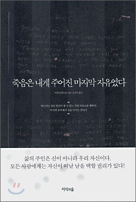
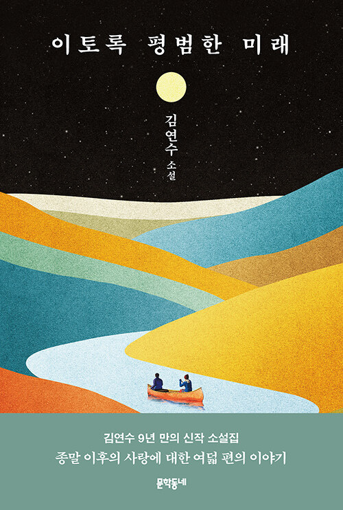

![[국내도서] 다정한 서술자](./img/library00_02.jpg)
![[국내도서] 한나 아렌트 평전](./img/library00_04.jpg)
알라디너의 선택
-
최근 인기글
더보기 →-
-
페이퍼
월요일은 뭐 하는 날?
by 다락방 | 2022.11.21
며칠전 점심시간에 공쟝쟝 님의 유튭 ☞ [공쟝쟝] 알라딘 ‘핵심고객(?)’, 우주에서 사라진 책을 찾아내다!? - YouTube 을 보다가 《정희진처럼 읽기》를 다시 읽고 싶어졌다. 독서와 여행에 관한 부분을 쟝님이 낭독해주셨는데, 그 부분이 좋았고 꼭 그 부분을 들려주고 싶은 친구가 생각났기 때문이다. 새삼스런 이야기지만 가장 강력한 지배는 사람들에게 여행과 독서를 금지하거나 접근하기 어렵게 하는 것이다. 인간은 누구나 독서 이전의 상태로 돌아갈 수 없기 때문이다.
 -
페이퍼
입문자를 위한 철학
by 로쟈 | 2022.11.22
바디우 입문서 얘기를 꺼낸 김에, 푸코와 지젝에 대해서도 적는다. 역시나 입문서격의 책이 나왔기 때문이다. 먼저, 푸코의 입문서로는 프레데릭 그로의 <미셸 푸코>. 푸코 전공자인 역자가 강추하고 있는 책이다. 그로는 프랑스의 푸코 전문가로 앞서 <푸코와 광기>, <미셸 푸코 진실의 용기> 등의 책으로 소개된 바 있다. 이번의 <미셸 푸코>는 푸코 철학 전반에 대한 개요이자 안내서. 분량이 번역본으로 200쪽이 되지 않는다. 무겁고 두꺼운 주저들을 읽기 전에 필히 훑어보면 좋을 책이다.
-
페이퍼
인생은 결핍과 상처로 시작해 그것을 채우고 위로받는 과정을 반복하는
by 자목련 | 2022.11.21
인생을 아는 나이가 오긴 할까. 그런 기대를 갖고 살아도 괜찮을까. 일정 나이가 되면 모든 걸 다 이해하고 포용할 수 있는 그런 어른이 될 수 있다는 불가능한 믿음 같은 걸 품고 사는 게 인생인지도 모르겠다. 아무렇지 않은 척, 나를 숨기고 사는 일이 상대에게는 괜찮은 걸로 착각하게 만드는 것. 숨겨왔던 나의 상처와 조금씩 대면할 수 있는 것, 이곳으로 오기 위해 떠나왔던 그곳을 그리워한다고 말할 수 있는 것. 아, 인생은 정말 알 수 없고 쉬운 건 하나도 없다. 그래서 이런 소설을 읽는 건 도움이 된다. 그러니까 엘리자베스 스트라우트의 『오, 윌리엄!』은 앞에 언급한 그런 것들로 채워진 소설이다.
-
주간 인기글
더보기 →-
-
페이퍼
우리 앞에 펼쳐질 ‘이토록 평범한 미래’
- scott | 2022.10.04
'제가 이제 정말 그 정말 불가능에 가까운 어떤 꿈을 가지고 있는 게 뭐냐 하면 그 가을마다 책을 내는 거예요. 여력이 있으면 봄에 한 권 더 내고. 근데 어쨌든 가을 마다 책을 계속 내겠다. 이 말씀은 여러 번 드렸어요. 그래서 가을이 되면 자동적으로 책이 나오는 것처럼. 근데 시간이 점점 지나니까 그게 얼마나 힘든 꿈이었는지 그거를 알게 되더라고요. 그래서 힘들다는 건 알지만, 어쨌든 어떤 한 시기를 평생은 아니겠지만, 가능한 시기까지 계속 가을마다 책이 나와서 어떤 사람들에게는 그 가을들이 제 책으로 이렇게 그 책이 나왔던 해 뭐 이런 걸로 기억이 될 수 있으면 너무 좋겠다. 큰 포부예요.
 -
페이퍼
입덕 신고
- 미미 | 2022.10.04
한나는 소크라테스가 주장하듯이 사유를 하면 악인이 될 수 없다고 말한다. 우리가 사유할 수 있는건 오직 선뿐이며, 나는 내가 사유하는 대로 되기 때문이다.(...) "사랑은, 거기에 없는 것을 갈망함으로써 그것과 관계를 맺는다. 이 관계를 드러내어 만천하에 알리고자 사람들은 연인이 사랑하는 사람에 대해 말하고 싶어 하는 것과 같은 방식으로 이 관계에 대해 이야기한다. 탐구는 사랑과 갈망의 일종이므로 사유의 대상은 오직 사랑스러운 것들, 즉 아름다움과 지혜, 정의 등일 수밖에 없다."-정신의 삶, 한나 아렌트 P.285

-
페이퍼
2022년 노벨 문학상 아니 에르노 (annie ameaux 1940)...
- scott | 2022.10.06
'트럼프의 취임 이후 곧바로 미국 곳곳과 해외에서 반反 트럼프 '여성 행진'이 이어졌다. 미국이 절망과 비통의 살얼음판을 걷던 시기였다. 다음에는 어떤 일이 일어날까? 이때 우리는 여성 인권 후퇴에 얼마나 근접했을까? 우리에게 권위주의 정권이 도래했던 걸까? <그레이스>가 우리의 과거 였다면 <시녀 이야기>는 우리의 미래 처럼 보였다. -마거릿 애트우드의 '타오르는 질문들' 중에서
-
책 읽는 사람들 bookple 추천 마니아
서재를 기반으로 한 책 읽는 사람들의 소셜 네트워크 서비스!
-
당신은 어떤 분야의 마니아인지 지금 확인하세요! →

화제의 서재글
-
HOT
더보기 →-
-
페이퍼
다른 사람들
- 별족
어디서 봤는지 기억하지 못하는 이야기다.한 사람이 비바람이 몹시 부는 날, 숙소를 찾아 헤메다가 여관에 들어갔다. 방이 딱 하나 남았는데, 아래층에 굉장히 까다로운 손님이 들어갔으니 주의해달라는 말을 듣는다. 조용히 잠만 자고 나오겠다고 겨우 방을 구해서 들어가서는 침대에 걸터앉아서 신발을 벗다가 떨어뜨린다. 깜짝 놀라서, 조심조심 다른 신발을 벗고, 잠자리에 들었다. 다음 날 아침, 숙소에서 나오는데, 눈이 퀭한 사람이 자신을 빤히 쳐다보면서 도대체 신발 한 짝은 언제 벗었느냐고 묻는 거다. 신발이 떨어지는 소리를 듣고 놀라서는 다음 신발 한짝이 떨어지기를 기다리느라 잠들지 못했다는 아래층 손님이다.
-
페이퍼
오늘 뻘짓
- 난티나무
(네이*블로그에서 주간일기챌린지 중이다. 그게 뭐라고 시키는 대로 꼬박꼬박 매주 쓰고 있는데 오늘은 오늘의 뻘짓을 썼다. 이게 다 알라딘에서 산 책커버 때문이라고 우겨본다. 그래서 갖고 와 보는 오늘의 뻘짓 일기.) 다음주 주말부터 며칠간 여행 간다. 무슨 책을 갖고 갈까 고민...은 아니고 생각 중인데 보아하니 몇 글자 읽지도 못할 듯.ㅋㅋ 그래도 챙겨가야 안심(?)이 된다. 참나, 무슨 안심? ㅎㅎㅎㅎ 일단 전자책 넣고. 이번달 알라딘 여성주의읽기 책이 <포르노랜드>다.
-
페이퍼
[강신주, 지승호]<바람이 분다, 살아야겠다> - 철학자 강신주 생각과 말들
- bookholic
(23)사랑에 빠지면, 자기가 꿈꾸는 것을 이루려 한다면 억압체제에 저항하게 돼요. 왜냐하면 체제에서 하지 말라고 하니까요. 사랑과 자유는 항상 같이 가는 거예요. 인문학의 정신이 사랑과 자유가 아니면 뭐겠어요. 그 두 가지 내용을 가진 것이 인문주의고, 정치적으로는 민주주의예요. 자유로운 사람만이 사랑을 할 수 있고, 사랑하는 사람만이 자유를 얻을 수 있어요.=====================사랑과 자유를 하나로 생각하다 보니, 사랑이라는 정의도 자유와 엮어서 내리는데 옳은 말씀이란다. 그가 내린 사랑의 정의… 누군가를 사랑하는 것은 그 사람의 자유를 사랑하는 것. 그야말로 자유주의자의 끝판왕이신 것 같구나.
-
NEW
더보기 →-
-
리뷰
마지막 이야기 전달자
- 빙혈
사람들이 예나 지금이나 열광하는 건 단순한 지식이나 팩트가 아니라 공감하고 몰입할 수 있으며 듣다 보면 어떤 영감까지를 선물하는 "이야기"입니다. 왜 이렇게 이야기를 좋아들 하는지는 알 수 없으나 어려서부터 할머니나 엄마가 들려 주는 이야기에 포근히 감싸안기는 건 동양과 서양이 조금도 다르지 않습니다. 인간 문명이 마침내 어리석은 물욕이나 호승심을 버리지 못하고 핵전쟁으로 멸망한다 해도, 행여 재기의 희망이 조금이라도 남아 가냘픈 싹을 틔운다면 그건 바로 이야기를 통해서일 것입니다.
-
리뷰
영화를 좋아하는 사람들의 '라떼는'
- kinye91
영화와 관련된 일을 하는 다섯 명의 글쓴이가 있다. 모두 영화를 좋아하는, 사랑하는 사람들이다. 나이, 아주 많지는 않지만, 지금 젊은 세대에 비하면 많은 편이다. 적어도 20대는 아니라는 말이다.그러면 이들이 영화에 대해서 이야기하면 '라떼는'이 되기 쉽다. 하긴 요즘은 20대도 '라떼는'이라고 욕먹을 때도 있다. 그만큼 세상은 확확 변하고 있다. 세대 간 차이들이 명확하게 드러난다. 그런 차이들이 우리 사회를 더 다양하게 하고 있는지도 모른다. 그 차이를 다양함으로 인정만 한다면.
-
리뷰
버지니아 울프의 창작 노트
- 에로이카
버지니아 울프의 브레인스토밍의 흔적이 담겨 있는 총 67권의 공책에 필기한 내용을 브렌다 실버가 정리해서 1983년에 펴낸 책이다. 운 좋게 도서관 보존창고에 이 책이 있었고, 도서관 시스템이 전자정보화되기 전에 입수한 책인지 표지 뒷면에는 대출기록카드가 꽂혀 있는데, 이전에 빌려간 이가 아무도 없는지 깨끗하다. 2022년 11월의 나를 위해, 아마도 오직 나를 위해, 아무도 찾는 이 없었을 이 책을 오랫동안 고이 보관해준 도서관에게 고맙다.
-
즐겨찾는 서재 브리핑
-
로그인해주시면 즐겨찾는 서재들의 업데이트 되는 글을
바로 한눈에 보실 수 있습니다.
로그인하기
이달의 당선작
-
마이리뷰
더보기 →-
-
외국 에세이
금세 사라질 듯 반짝이는 빛, 어린 시절
<어린 시절>
- scott
그런 책이 있다. 전혀 알지 못했던 작가의 작품을 우연히 펼쳤을 때 단 한 문장에 심장을 움직이는 책이 있다.'어린 시절은 관棺처럼 좁고 길어서, 누구도 혼자 힘으로는 거기서 나갈 수 없다. 그것은 늘 그 자리에 있고, 모두가 그것을 분명하게 볼 수 있다.'"Childhood is long and narrow like a coffin, and you can't get out of it on your own. It's there all the time and everyone can see it .'이 책을 처음 만난 건 코로나 팬데...
-
청소년소설
삶과 죽음은 피할 수 없는 우리의 몫
<종말주의자 고희망>
- 자목련
『종말주의자 고희망』 이란 반어적 표현의 제목을 보고 누군가는 종말에 머물고 누군가는 희망에 머물 것이다. 종말에 시선이 닿았더라도 종말을 원하기보다는 희망을 바라는 게 진짜 마음이 아닐까 싶다. 그럼에도 주인공 희망이 어쩌다 종말주의자가 되었을까 궁금해진다. 희망은 인터넷 플랫폼에 소설을 쓰는 중학생 작가다. 10대들이 좋아할 달달한 로맨스나 판타지 같은 건 쓰지 않는다. 희망의 소설 속 주인공은 항상 죽는다. 지금 쓰고 있는 소설도 모두가 사라진 종말의 세계에 남겨진...
-
서양철학 일반교양 철학
낭만주의, 인류 의식의 대전환적 사태
<낭만주의의 뿌리>
- 필리아
어떤 유사한 신조를 지닌 사태가 광범위한 인간 무리와 지역에서 발생하는 이유는 무엇일까? 물론 이것이 일순간 이루어지는 일은 아니지만 점진적으로, 그러나 비교적 이전 시대의 흐름과는 달리 빠른 속도로 확산되는 동인(動因)이 분명 있을 것이다. 더구나 인간 역사의 오랜 시간 중추적으로 이어져온 믿음에 많은 인간이 비로소 의심과 회의의 시선을 겨누게 되는 어느 순간이 오고야 만다. 아마 인류 역사에 있어 이러한 전복적 변환의 사태를 몰고 온 것이 ‘낭만주의(Romanticism)’...
-
마이페이퍼
더보기 →-
-
사진/그림 에세이 외국에세이 사진집
산다는 건 그런 거야, 힘든데 웃는 거지.
<휴먼스>
- blanca
그런 날이 있다. 이 세상 사람은 다 행복해 보이는데 나만 불행한 것 같은, 나에게만 이런 시련이 빈번한 것만 같은...영화 포레스트 검프에서 나온 그 '초콜릿 상자' 같은 인생에서 달콤한 것이 아닌 씁쓸한 맛의 초콜릿만 하필 내가 뽑은 것 같은... 물론 그럴 리 없다. 지금 거리를 걷는 사람들 중 누구라도 한 명 지목하여 그 사람이 '분투하는 것'에 대하여 묻는다면 다들 나름대로의 처절한 대답을 가질 것이다. 지금 여기에서 힘들지 않은 사람은 없다. 내가 겪는 이 일들이 타인들에 비해 유달리 쉽고 나는 행운아라고 바로 응답할 수 있는 사람은 거의 없을 것이다. 실제 거리를 걷는 사람들에게 이런 질문들을 던진 사람이 있다.
-
교양 인문학
한나 아렌트 : 경험하고 생각하고 사랑하라
<한나 아렌트 평전>
- 단발머리
저명한 혹은 세계적으로 유명한 사람의 자서전을 쓰는 사람에게는 빠지기 쉬운 두 개의 함정이 있다. 한 가지는 이상화(우상화)이고 또 한 가지는 뒷담화. (신기하게도 모두 ‘화’로 끝난다.) 이상화는 과거에 대한 미화, 망자에 대한 연민으로 치우쳐질 우려가 있다. 쉬운 길이다. 뒷담화 역시 마찬가지. 비판이란 행위 자체는 가치 중립적일 수 있지만, 뾰족한 비판으로 자신의 지성을 증명하고자 하는 멍청한 시도는, 후대를 살아가는 모든 사람에게 지독한 유혹이 된다.
-
피아노
당신도 슈만을 좋아하세요?
<백건우가 연주하는 슈만 [2CD]>
- 매실
언제부터인가 슈만이 나의 최애 작곡가가 되었다. 클래식 음악을 폭넓게 듣지 않고 피아노 곡만 편애해서 '가장 좋아한다'라는 말을 붙이긴 성급하긴 하지만 최소한 지금까지는. 바흐, 모차르트, 베토벤, 리스트, 슈베르트, 쇼팽, 브람스, 라흐마니노프, 라벨, 프로코피예프 등의 다른 작곡가들의 곡 중에서도 들을 때면 감탄하고 황홀경에 취하며 눈물을 흘리는 곡들이 있지만 감탄하고 존경하며 감동하는 차원과 별개로 슈만의 피아노 곡에 유독 마음이 안절부절하며 흔들린다.
-